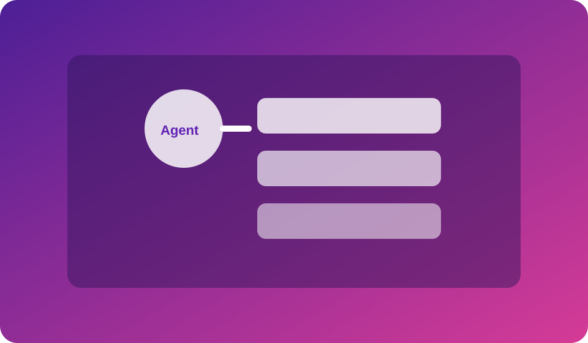
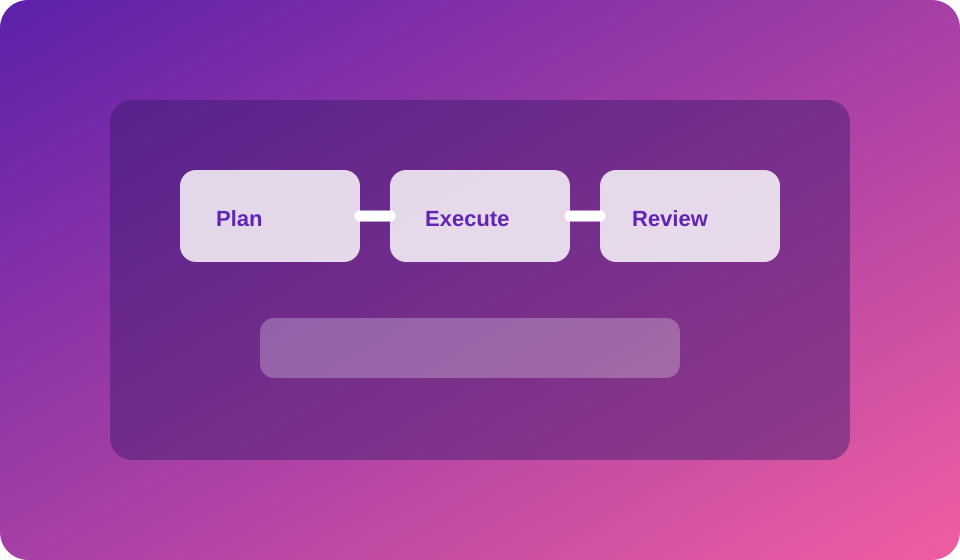

Agent Architecture
Understand how memory, tools, and decision layers connect to build stable AI agents.
Live Webinar Class
Design and deploy no-code AI agents that handle repetitive tasks and escalate exceptions.


Understand how memory, tools, and decision layers connect to build stable AI agents.

See how planning, execution, and review loops work together in real production workflows.
This webinar is ideal for product builders, consultants, automation specialists, and technical founders. You will leave with an actionable blueprint to launch your first production-ready AI agent and measure its impact.